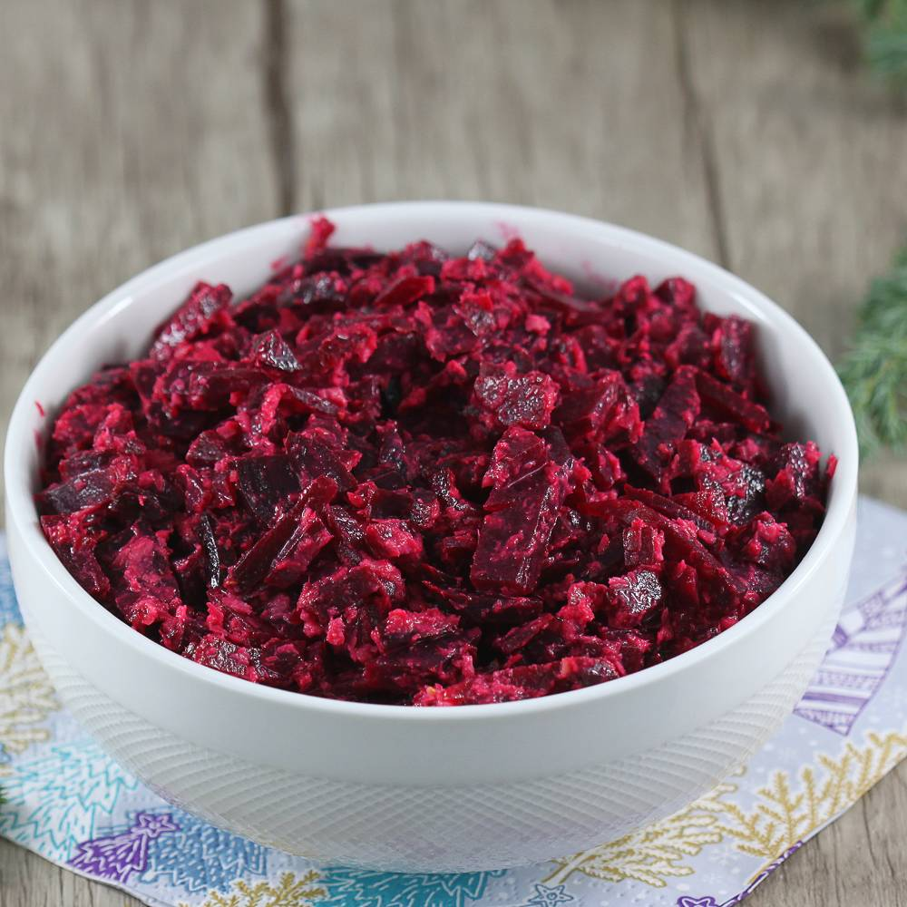

A combination of grated beetroot and horseradish is an irreplaceable part of every festive meal in Poland. This popular side dish is occasionally enriched with the addition of apples, caraway seeds, wine, and various seasonings.
Meal prep time : 1 hour 15 minutes
Servings : 1 jar (16 oz)